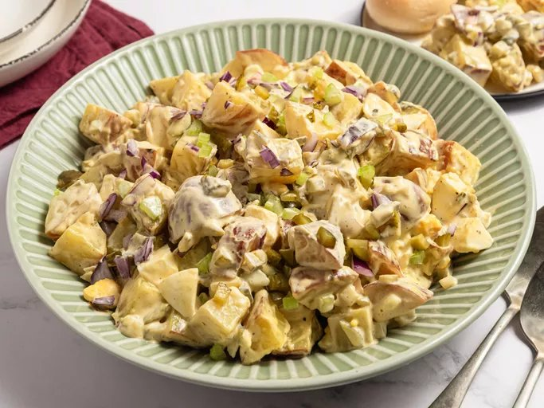

Potato Salad

Description
This potato salad is quick to make for a delicious summer side dish with old-fashioned flavor. Make it the day before you plan to serve it for the best flavor. Sure to be a hit at any BBQ or potluck!
Why You'll Love It
- This recipe calls for red potatoes, tangy pickles, and hard-cooked eggs for classic summer flavor.
- Home cooks love the easy-to-follow steps and the flexibility of the ingredients.
- It's a perfect side dish for barbecues, picnics, and family gatherings.
Ingredients
- 5 pounds red potatoes, chopped
- 3 cups mayonnaise
- 2 cups finely chopped pickles
- 5 large hard-cooked eggs, chopped
- ½ cup chopped red onion
- ½ cup chopped celery
- 3 tablespoons prepared mustard
- 1 tablespoon apple cider vinegar
- 1 teaspoon salt, or to taste
- ½ teaspoon ground black pepper or to taste
Instructions
- Gather all ingredients.
- Place potatoes into a large pot and cover with salted water; bring to a boil. Reduce heat to medium-low and simmer until tender, about 10 minutes. Drain. Return potatoes to the empty pot to dry and cool.
- Stir mayonnaise, pickles, hard-cooked eggs, red onion, celery, mustard, and cider vinegar together in a large bowl; season to taste with salt and pepper.
- Fold in cooled potatoes until well combined.
- For best results, store potato salad in the refrigerator until chilled or overnight before serving to allow the flavors to meld.
- Serve and enjoy!
Back to Home